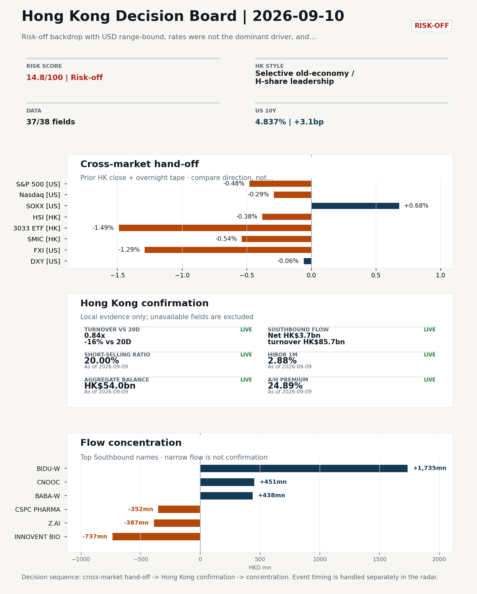
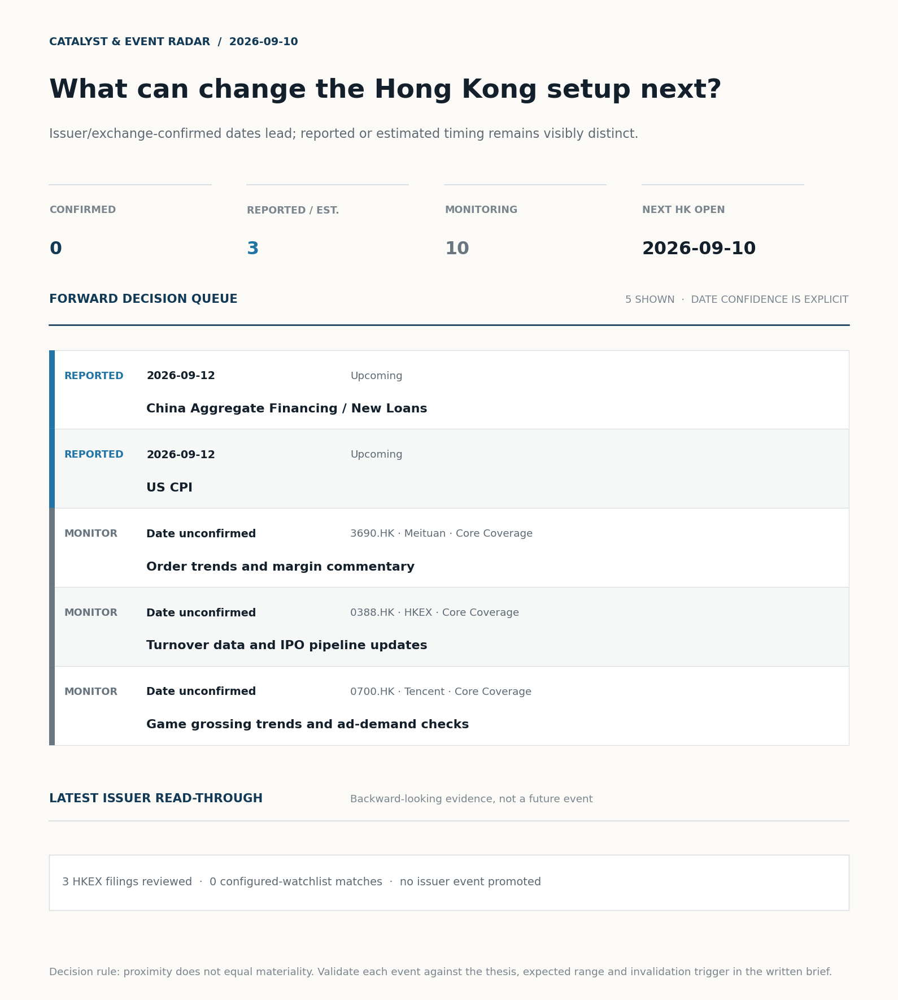
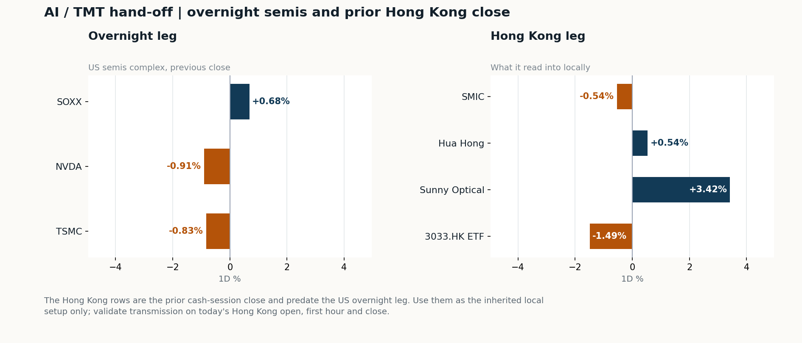
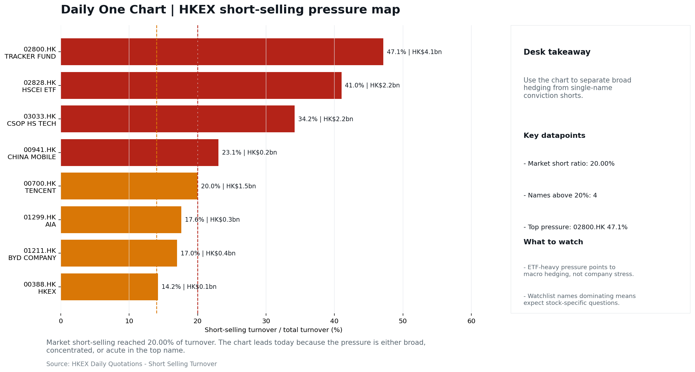

In this issue
Morning Research Workbench | 2026-09-10
Executive Summary
- Did yesterday's call work? UNRESOLVED - No comparable next close is available yet, so the call is still open.
- What changed overnight? Semis led lower: SOXX +0.68%, NVDA -0.91%, TSMC -0.83%. HSI -0.38% and 3033.HK -1.49%.
- What it means for AI/TMT Style, not beta - Selective old-economy / H-share leadership, a 1.11pp spread. Treat banks, energy, telecoms, and SOE yield as the cleaner relative expression; growth beta still needs proof.
- What to watch today Next scheduled catalyst: China Aggregate Financing / New Loans on 2026-09-12. Watch whether SMIC and Hua Hong trade with HSCEI rather than with the overnight semis leg.
Layer 1 | Scan (5 min)
1.1 Yesterday's Call
Verdict: UNRESOLVED. No comparable next close is available yet, so the call is still open.
Recent record. 6 confirmed / 4 broken over the last 10 scoreable calls (60.0% hit rate). This is a directional close-to-close diagnostic, not a track record.
1.2 Opening Decision Board
Global-to-Hong Kong signals
Decision-useful subset: each row states the implication and the next test. Descriptive secondary monitors are kept out of the five-minute scan.
| Signal | Last / move | Interpretation | Confirmation / invalidation |
|---|---|---|---|
| S&P 500 | 7,636.36 / -0.48% | Broad US risk fell without a clear driver in today's fields; treat it as beta, not a signal. | Watch whether Nasdaq and offshore-China proxies move the same way. |
| Nasdaq 100 | 29,421.55 / -0.29% | Growth outperformed broad beta, a supportive style signal for Hong Kong internet and platform names. | 3033.HK versus HSI leadership carries the read; rising yields would undo it. |
| Hang Seng Index | 25,317.18 / -0.38% | The index was carried by old-economy and H-share names, not by broad participation: 3033.HK differs by 1.11pp. | Southbound participation decides whether this is investable or just a print. |
| Hang Seng TECH ETF (3033.HK) | 4.3720 / -1.49% | Hong Kong growth lagged, so broad-index strength is not yet a duration signal. | Needs a stable CNH and Southbound buying to become a duration signal. |
| Semiconductors (SOXX) | 532.00 / +0.68% | Semis led the Nasdaq by 0.97pp, putting the AI capex trade back in front. | SMIC and Hua Hong at the open show whether it transmits to Hong Kong. |
| US 10Y | 4.8370% / +3.1bp | The yield proxy rose, tightening the discount-rate backdrop for long-duration Hong Kong growth. | Read it through 3033.HK relative performance, not the index level. |
| USD/CNH | 6.7045 / +0.00% | CNH was stable, removing an immediate FX impulse but not confirming equity direction. | FXI and Southbound flow decide whether this reaches Hong Kong equities. |
| VIX | 16.46 / +4.71% | Higher implied volatility raises the tail-risk premium and weakens risk-on conviction. | Falling volatility on narrowing breadth is a warning, not support. |
Secondary monitors retained in the source bundle: SMIC (0981.HK), CSI 300, China 10Y, CN-US 10Y spread, DXY, USD/HKD, Brent crude, COMEX gold, Copper.
Hong Kong local confirmation
| Check | Value | Status | Source / as of | Why it matters |
|---|---|---|---|---|
| Main Board turnover vs 20D | 0.84x | -16% vs 20D | Live local | HKEX | 2026-09-09 | Trailing 20-session average turnover was HK$245.4bn. |
| Southbound / Northbound net flow | Southbound Net HK$3.7bn | turnover HK$85.7bn | Northbound Turnover RMB246.1bn | net not reported | Live local | HKEX Connect | 2026-09-09 | Southbound net buy is calculated from HKEX disclosed buy and sell turnover. |
| Short-selling ratio | 20.00% | Live local | HKEX | 2026-09-09 | Official HKEX stock-level short-selling table, aggregated as a share of total market turnover. |
| AH premium index | 24.89% | Live public | Yahoo | 2026-09-09 | Fixed 10-name basket, equal-weighted, both legs priced on the same date; comparable across dates. Covered-pair average was +33.95% across 19 pairs. |
| USD/HKD spot vs band | 7.8414 | band 7.7500 to 7.8500 | Live quote + local | Yahoo | 2026-09-09 | Mid-band: 86 pips from the weak side and 914 pips from the strong side, so the peg is not an active constraint. Official Convertibility Undertakings define the linked-rate stress boundaries for USD/HKD. |
| HIBOR 1M | 2.88% | Live local | HKMA | 2026-09-09 | 1M HIBOR is the cleanest quick read for Hong Kong funding conditions and equity-duration pressure. |
| Hong Kong leadership | Selective old-economy / H-share leadership | Proxy | HSI / HSCEI / 3033.HK ETF relative | 2026-09-09 | Use HSI / HSCEI / 3033.HK ETF relative moves as the opening style read. |
Risk state and evidence
Composite risk score: 14.8/100 | Regime: Risk-off
| Component | Score impact | Evidence |
|---|---|---|
| US beta | -2.9 | S&P 500 -0.48% |
| HK growth ETF proxy | -7.5 | 3033.HK ETF -1.49% |
| Semis complex | +3.4 | SOXX +0.68% |
| Offshore China proxy | -6.5 | FXI -1.29% |
| Dollar pressure | +0.6 | DXY -0.06% |
| Volatility | -9.4 | VIX +4.71% |
| HK short-selling | -8 | Short-selling ratio 20.00% |
| HK turnover | -5 | Turnover 0.84x 20D |
Base 50 plus the component deltas above. Semis complex entered the score on 2026-08-22; earlier scores in the ledger exclude it.
Morning Checklist
- Risk-off backdrop with USD range-bound, rates were not the dominant driver, and Nasdaq 100 outperformed FXI Overnight regime | Start by deciding whether the day is about Risk-off conditions or a style pivot.
- China Trade Balance (Past expected window (unverified)) Macro / policy | Watch whether it changes the day's core market narrative | Industries: Market-wide
- China CPI / PPI (Past expected window (unverified)) Macro / policy | China demand strength, PPI pass-through, and policy-easing odds | Industries: Consumer, Materials, Property
- China Aggregate Financing / New Loans (Upcoming) Macro / policy | Credit expansion, domestic demand chains, and financials | Industries: Banks, Property chain, Infrastructure
Visual Dashboard

Catalyst & Event Radar

Chart read: No issuer/exchange-confirmed event date is populated; 3 reported or estimated timing item(s) and 10 undated trigger(s) remain explicit.
Source: Public calendars, issuer disclosures and configured research watchlists
Layer 2 | Core Research (20-30 min)
2.1 Global-to-Hong Kong Transmission
Market Setup Core tape. Overnight US session was risk-off and rangebound in the dollar, with Nasdaq 100 outperforming FXI by 0.73pp on the cross. Main driver. China sentiment led the downside: FXI fell 1.29% and prior-HK 3033.HK was -1.49%, versus a comparatively orderly S&P 500 at -0.48%. HK relevance. The move was concentrated in offshore-China and HK growth proxies rather than in US mega-caps, consistent with elevated HK short-selling at 20.00% and turnover at only 0.84x the 20-day average.
Key Drivers
- Nasdaq 100 outperformed FXI by 0.73pp, showing the drag was China/HK-led rather than US-led, even as S&P 500 fell 0.48% and NVDA/TSM slipped 0.91%/0.83%.
- Short-selling ratio of 20.00% combined with Main Board turnover at 0.84x the 20-day average keeps conviction low and makes rebounds easier to fade.
- Oil +4.26% and copper +1.77% point to a commodity bid that is supportive for energy/cyclicals but a margin/geopolitics headwind for the rest of the tape.
- FXI -1.29% confirmed the prior-HK direction (HSI/HSCEI -0.38%) and the mainland $54bn bank/insurer recap headline landed without a positive tape reaction, reinforcing the risk-off read.
Hong Kong Read-Through Opening implication. For the 2026-09-10 HK session, expect a defensive-leaning open with HSCEI/old-economy leadership over 3033.HK likely to persist. Hong Kong style leadership and flow confirmation are set out in the Hong Kong review below.
Watch Points
- USD composite moved higher by +0.03pct intraday, with a 0.207pct range.
- Main turning points appeared around 2026-09-09 08:15 trough / 2026-09-09 08:50 peak / 2026-09-09 09:10 peak, suggesting event-driven repricing rather than a clean one-way USD move.
- The biggest cross-asset divergence was Nasdaq 100 versus FXI, a spread of 0.731pct.
- Gold moved +0.64pct intraday with a 1.344pct high-low range.
Curated overnight stories
- China says it will pump $54 billion into banks and insurers - but their stocks still fell Why it matters: Signals ongoing state recapitalisation of the financial system while the initial market reaction was negative, indicating scepticism on transmission to earnings or capital… HK read-through: Direct read-through to HK-listed Chinese banks (ICBC, CCB, ABC, BOC, BoCom) and the insurers (Ping An, AIA, China Life).
- China's EV makers shift gears to focus on humanoids as car market slows Why it matters: Flags a strategic pivot by Chinese EV names toward humanoid robotics as auto demand cools, which reframes long-term TAM for components, sensors and AI hardware exposure. HK read-through: Most relevant for HK-listed EV/auto leaders and component suppliers, plus listed proxies for humanoid/cobot supply chains.
- China Trade Balance, CPI/PPI and Aggregate Financing/New Loans on the near-term calendar Why it matters: The next batch of China activity, price and credit prints will set the policy-easing narrative and shape demand-side expectations for the mainland and HK. HK read-through: Property, materials, industrials and banks are most sensitive to credit and PPI surprises; consumer discretionary is sensitive to CPI/Trade.
- US CPI (upcoming) and broader risk-off overnight backdrop with USD range-bound Why it matters: Rates were not the dominant driver overnight, but the upcoming US CPI print will reset USD and global rate expectations, which steers flows into HK. HK read-through: A hot print would pressure HK rate-sensitive growth/internet and could lift the HK dollar-funded side; a soft print supports HK tech and the southbound bid.
- Adani Enterprises shares jump as airport unit enters into $1 billion fundraising deal Why it matters: Emerging-markets corporate action headline with limited direct HK linkage, but illustrates ongoing EM primary-capital activity. HK read-through: Indirect read-through to HK-listed infrastructure/airport peers and EM sentiment; we do not have evidence of a direct transmission channel, so impact is flagged as low.
AI / TMT hand-off

Overnight leg. The overnight semis leg was flat (-0.35% average), so it does not set the direction for Hong Kong tech today. Hong Kong expression. Let local flow and style leadership drive the tech read rather than the overnight tape. Observable test. Watch whether SMIC and Hua Hong trade with HSCEI rather than with the overnight semis leg.
| Name | Role in the chain | 1D | Leg |
|---|---|---|---|
| SOXX | Semis complex | +0.68% | overnight |
| NVDA | AI capex narrative | -0.91% | overnight |
| TSMC | Foundry demand | -0.83% | overnight |
| SMIC | Leading-edge / domestic substitution | -0.54% | Hong Kong |
| Hua Hong | Mature-node pricing cycle | +0.54% | Hong Kong |
| Sunny Optical | Hardware and optics supply chain | +3.42% | Hong Kong |
| 3033.HK ETF | Broad HK tech beta | -1.49% | Hong Kong |
Clock discipline. The Hong Kong rows are the prior cash-session close and predate the US overnight leg. Use them as the inherited local setup only; validate transmission on today's Hong Kong open, first hour and close.
2.2 Hong Kong Local Tape and Flow
Local Tape Setup Local read. Hong Kong opens into a confirmed risk-off tape with the drag concentrated in HK growth rather than US beta. Verification point. Local flow is thin and defensive: Main Board turnover 0.84x the 20-session average, short-selling at 20.00% of turnover, and the highest stock-level short ratios sit in HSTECH ETFs (03067.HK 71.89%, 07226.HK 70.62%) rather than single names. Risk to watch. Cross-asset signals split: WTI +4.16% and USO inflow support energy/cyclicals while gold +0.64% flags a mild defensive bid, and the $54bn mainland bank/insurer recap landed without a positive tape reaction.
Style and Local Leadership Style call. Selective old-economy / H-share leadership.
- Evidence: HSCEI beat 3033.HK by 1.11pp (-0.38% versus -1.49%)
- Portfolio meaning: Treat banks, energy, telecoms, and SOE yield as the cleaner relative expression; growth beta still needs proof.
- Cross-market read: Offshore China proxy FXI -1.29% and USD/CNH +0.00% frame cross-border risk appetite. USD/HKD last traded around 7.8414, which keeps the Hong Kong funding lens in focus.
Flow Confirmation Official Stock Connect evidence is available; the Flow Tracker confirms whether local money supports the price action.
Follow-Through Checklist Follow-through check. For 2026-09-10 HK open: (1) If 3033.HK reclaims HSI/HSCEI on turnover >1.0x 20D and short-selling ratio drops below ~17%, the overnight China-led drag is reversing and growth leadership is confirmed. Failure condition. Invalidate if 3033.HK retakes leadership while CNH firms and local participation broadens.
Cross-asset attribution
| Driver | Direction | Score | Evidence | HK implication |
|---|---|---|---|---|
| Short-selling pressure | drag | 3.5 | HKEX short-selling ratio was 20.00%. | Elevated short activity argues for extra confirmation before chasing rebounds. |
| Oil and geopolitics | mixed | 3.33 | Oil moved +4.16%. | Split the read between energy/cyclicals support and margin/geopolitical pressure. |
| Hong Kong participation | drag | 1.65 | Main Board turnover was 0.84x the 20-session average. | Thin turnover makes index moves easier to fade. |
Local flow evidence
Flow Takeaways
- Short-selling pressure is elevated, so local rebounds need cleaner breadth and flow confirmation.
- Stock Connect Southbound: net HK$3.7bn on turnover HK$85.7bn (as of 2026-09-09).
- Stock Connect Northbound: turnover RMB246.1bn; public file provides total turnover/top active names, not full net-buy.
- AH premium: fixed 10-name basket +24.89% (comparable across dates); covered-pair average +33.95% over 19 pairs; widest premium: China Communications Construction 99.26%.
Stock Connect Southbound Active Names
| # | Ticker | Name | Buy | Sell | Net buy | HKEX turnover rank |
|---|---|---|---|---|---|---|
| 1 | 09888.HK | BIDU-W | HK$1,756.9mn | HK$22.1mn | HK$1,734.8mn | 2 |
| 2 | 01801.HK | INNOVENT BIO | HK$21.5mn | HK$758.1mn | HK$-736.5mn | 6 |
| 3 | 00883.HK | CNOOC | HK$1,260.2mn | HK$809.0mn | HK$451.2mn | 4 |
| 4 | 09988.HK | BABA-W | HK$848.3mn | HK$410.4mn | HK$437.9mn | 7 |
| 5 | 02513.HK | Z.AI | HK$1,194.8mn | HK$1,582.1mn | HK$-387.3mn | 3 |
AH Premium Dispersion
| Name | A ticker | H ticker | Premium | As of |
|---|---|---|---|---|
| China Communications Construction | 601800.SS | 1800.HK | +99.26% | 2026-09-09 |
| Everbright Bank | 601818.SS | 6818.HK | +84.82% | 2026-09-09 |
| China Railway Construction | 601186.SS | 1186.HK | +61.40% | 2026-09-09 |
HKEX Short-Selling Watch
| Ticker | Name | Short ratio | Short turnover | Total turnover |
|---|---|---|---|---|
| 00388.HK | HKEX | 14.23% | HK$0.1bn | HK$0.9bn |
| 00700.HK | TENCENT | 19.99% | HK$1.5bn | HK$7.7bn |
| 00941.HK | CHINA MOBILE | 23.05% | HK$0.2bn | HK$0.7bn |
- Short-value leaders: 02800.HK TRACKER FUND (HK$4.1bn); 03033.HK CSOP HS TECH (HK$2.2bn); 02828.HK HSCEI ETF (HK$2.2bn); 00700.HK TENCENT (HK$1.5bn).
2.3 Macro Transmission
Desk read. The macro agenda into the 10 September HK session is dominated by two unverified China prints already in the rear-view window - the 7 September Trade Balance and the 9 September CPI/PPI - and two confirmed upcoming catalysts on 12 September: China Aggregate Financing/New Loans and US CPI, followed by China activity data (IP/Retail Sales/FAI) on 15 September.
Market sensitivity. The 9 September session closed in a risk-off regime with USD range-bound and the rate channel not dominant, while VIX jumped 4.71% and WTI added 4.26%; rates have therefore not yet been the transmission belt for the move.
HK implication. Because HKD is pegged, any US CPI surprise on Friday is the cleanest channel into HK equity duration via HIBOR and the HKMA balance, with NVDA (-0.91%) and TSMC (-0.83%) overnight confirming that HK tech leadership remains the marginal driver rather than China cyclicals.
Macro watchpoints
- Verify the official 9 September China CPI/PPI print and 7 September Trade Balance before leaning on a margin or demand thesis
- US CPI on 12 September as the primary channel into HK equity duration via the HIBOR/HKMA peg - any surprise resets the rates-and-dollar backdrop.
- China Aggregate Financing/New Loans on 12 September for a fresh read on the credit impulse and the Banks/property-chain/infrastructure rotation.
- China activity data (IP/Retail Sales/FAI) on 15 September to confirm or overturn any near-term consumer-discretionary leadership.
| Time | Region | Event | Status | Desk read |
|---|---|---|---|---|
| CN | China Trade Balance | Past expected window (unverified) | Impact: Watch whether it changes the day's core market narrative | Attention: 3/5 | Industries: Market-wide | |
| CN | China CPI / PPI | Past expected window (unverified) | Impact: China demand strength, PPI pass-through, and policy-easing odds | Attention: 3/5 | Industries: Consumer, Materials, Property | |
| CN | China Aggregate Financing / New Loans | Upcoming | Impact: Credit expansion, domestic demand chains, and financials | Attention: 5/5 | Industries: Banks, Property chain, Infrastructure | |
| US | US CPI | Upcoming | Impact: Rates expectations, the dollar, and growth-equity valuation | Attention: 5/5 | Industries: Technology, Internet, Brokers | |
| CN | China Activity Data (IP / Retail Sales / FAI) | Upcoming | Impact: Consumer resilience, growth expectations, and risk-asset pricing | Attention: 5/5 | Industries: Consumer, E-commerce, Consumer discretionary |
Positioning and risk backdrop
- Detailed local flow evidence is covered under Flow Tracker and Attribution; keep this section focused on options, hedging, and macro-positioning risk.
2.4 Company Micro Research and Catalysts
No high-conviction sector story cleared the main-report relevance gate for this run.
Company Event Takeaway Desk read. Hong Kong opens 2026-09-10 with a risk-off global tape and no rating actions to anchor the day. Why it matters. Among coverage names, Meituan (3690.HK) is the only stock with a material session move (-3.47% at 77.8) and sits mid-range. Follow-up. BYD (1211.HK) is down 2.44% and the CNBC piece on Chinese EV makers rotating R&D toward humanoids is worth flagging as a multi-quarter capital-allocation narrative for 1211.HK and the Hong Kong-listed EV complex, not as a same-day earnings input.
LLM Quick Takes
- 3690.HK | Closed -3.47% at 77.8, mid-range at 46% of 60-session band. Last reported quarter (Q2 2026) showed 14.4% revenue growth and core local commerce returning to profit, so today's move is not…
- 1211.HK | Closed -2.44% at 81.8, mid-range at 42% of 60-session band. Sector context: CNBC flags Chinese EV makers shifting engineering focus to humanoids as auto demand slows, which is relevant…
- 0388.HK | Closed -0.40% at 400.4, mid-range at 72% of 60-session band. Treat as a turnover/IPO proxy rather than a signal today; no company-specific catalyst supplied. Next check…
- 1299.HK | Closed +0.07% at 76.95, top of range (77% of 60-session band). No supplied catalyst; remains a read-through for mainland visitor activity and HK financial sentiment. Next check…
No immediate portfolio catalyst: 3 official filings were screened and the low-signal market set stays aggregated.
3 profit warnings
Broad-market filings remain traceable in the source appendix; they are not expanded here without a watchlist, estimate or liquidity read-through.
Coverage boundary. sell-side rating changes, IPO / grey-market monitor were not decision-grade in this run; their absence is not treated as confirmation that no event exists.
Core coverage requiring follow-up
Core coverage
| Name | Ticker | Last | 1D | Range position | Morning note |
|---|---|---|---|---|---|
| Meituan | 3690.HK | 77.80 | -3.47% | Mid-range | Down 3.47% on the session, mid-range at 46% of its 60-session band. |
| HKEX | 0388.HK | 400.40 | -0.40% | Mid-range | Marginally lower (-0.40%), mid-range at 72% of its 60-session band. |
Recent headlines for Meituan:
- Meituan (MPNGF) (Q2 2026) Earnings Call Highlights: Record Revenue and Strategic AI Pivot Drive... (GuruFocus.com)
Priority follow-up
| Name | Ticker | Last | 1D | Range position | Morning note |
|---|---|---|---|---|---|
| BYD Company | 1211.HK | 81.80 | -2.44% | Mid-range | Down 2.44% on the session, mid-range at 42% of its 60-session band. |
| AIA | 1299.HK | 76.95 | +0.07% | Top of range | Marginally higher (+0.07%), in the top quartile of its 60-session range (77%). |
2.5 Morning Meeting Questions
Q1. The index fell but Southbound bought - is the move real?
- Evidence: HSI -0.38% against Southbound net +3.7bn HKD.
- How to answer: Treat it as unconfirmed. Price and mainland flow disagreed, so the price move was not driven by Southbound participation; it needs another session of confirmation before being read as a trend.
Q2. The index was -0.38% but tech lagged at -1.49% - what drove the split?
- Evidence: HSI -0.38% versus 3033.HK -1.49%, a 1.11pp spread.
- How to answer: This was a style move, not a beta move: the 1.11pp spread means index direction alone does not describe the session. Old-economy and H-share names carried the index while growth lagged.
Layer 3 | Session Playbook (8-12 min)
3.1 Base Case and Scenario Map
Starting posture. Selective old-economy / H-share leadership (medium confidence); composite risk 14.8/100 (Risk-off). Treat banks, energy, telecoms, and SOE yield as the cleaner relative expression; growth beta still needs proof.
Scenario map
| Scenario | Observable trigger | Interpretation | Research response |
|---|---|---|---|
| Selective growth confirms | 3033.HK keeps a >0.5pp first-hour lead over HSCEI; SMIC and Hua Hong stop lagging broad beta; CNH is stable. | The prior style split has live price confirmation, but is not yet broad China risk-on. | Prioritize internet/platform relative strength; verify participation again at the close. |
| Broad beta takes over | HSI and HSCEI rise together, breadth improves and the 3033.HK lead narrows without turning negative. | Leadership is broadening from a style trade into market beta. | Expand the research set from growth leaders to financials, SOEs and index-heavy names. |
| Risk-off continuation | 3033.HK loses its lead, semis underperform HSCEI and CNH depreciation accelerates. | The prior divergence was a temporary pocket of strength rather than a durable hand-off. | Treat rebounds as unconfirmed; focus on balance-sheet, catalyst and crowding risk. |
Clocked validation scorecard
| Window | Check | Prior evidence | Pass condition | What it decides |
|---|---|---|---|---|
| 09:30-10:30 | 3033.HK vs HSCEI | -1.11pp at the prior close | 3033.HK retains >0.5pp relative lead | Whether growth leadership survives the open |
| 09:30-10:30 | Semiconductor hand-off | SMIC -0.54%; Hua Hong Semiconductor +0.54% | Stabilise after the open; at least one stops underperforming HSCEI | Whether overnight semis pressure is contained locally |
| 09:30-10:30 | HSI price zone | 25,317 vs 25,000 / 25,500 reference grid | Hold above the lower grid or reclaim the upper grid with breadth | Whether broad beta is stabilising; grid is derived, not technical analysis |
| 09:30-10:30 | USD/CNH | 6.7045 | +0.00% | No acceleration in CNH depreciation | Whether FX permits a clean Hong Kong risk extension |
| At close | Turnover | 0.84x | -16% vs 20D | At least 1.0x the 20-session average | Whether the move had normal participation |
| At close | Southbound | Net HK$3.7bn | turnover HK$85.7bn | Net buying remains positive and broadens beyond one or two names | Whether mainland money confirms the price move |
| At close | Short pressure | 20.00% | Falls versus the prior verified reading (20.00%) | Whether rebound conviction improved |
Upgrade rule. Confirm if HSCEI keeps outperforming 3033.HK with healthy turnover and broad Southbound participation. Kill switch. Invalidate if 3033.HK retakes leadership while CNH firms and local participation broadens. Clock discipline. At 07:30, same-day Southbound, turnover and short-selling outcomes are not known. Use the first-hour price/FX checks provisionally and make the final classification only after the close. Event clock. No same-day decision-grade item is populated; the nearest reported/estimated item is China Aggregate Financing / New Loans on 2026-09-12. Verify the issuer or official calendar before relying on the date.
3.2 Daily One Chart
Daily One Chart | HKEX short-selling pressure map

Chart read. Market short-selling reached 20.00% of turnover. Why it matters. The chart leads today because the pressure is either broad, concentrated, or acute in the top name.
Source: HKEX Daily Quotations - Short Selling Turnover
Optional Appendix | Traceability and Performance (10-15 min)
Report Metadata
Date policy: Review date 2026-09-09 is treated as
Trading Daily. | Global (US/Europe) data date is 2026-09-09; adapter effective date is 2026-09-09 and summary date is 2026-09-09. | Hong Kong local data date is 2026-09-09; role: same-session local cash tape. Market data quality: Coverage:37/38| Missing:1Report quality:88.1/100| GradeB| Statusmanual review
Report Quality and Validation
- Quality score: 88.1/100 | Grade: B | Status: manual review
- Run summary: 8 healthy | 2 caveat | 0 failed
- Release recommendation: Manual review | Fact validation produced a release-blocking error; automatic distribution is blocked.
| Source | Status | Bucket |
|---|---|---|
| Macro calendar | partial | caveat |
| Risk and sentiment feed | partial | caveat |
Desk-use guidance summary: 1 blocking | 0 advisory
Desk-use guidance
- Blocking: Fact validation has a release-blocking finding; review it before distribution.
| Weak component | Score | Read |
|---|---|---|
| Fact-check guardrail | 50.0 | Checked 24 numeric claims; 2 numeric mismatch(es), 0 logic warning(s); 14 structured claims, 0 source/text warning(s); 2 critical, 0 review. |
Quality warnings
- Fact-check guardrail is weak: Checked 24 numeric claims; 2 numeric mismatch(es), 0 logic warning(s); 14 structured claims, 0 source/text warning(s); 2 critical, 0 review.
- Narrative fact-check guardrail produced warnings; review the validation table before relying on narrative sections.
Narrative fact-check guardrail
- Checked 24 numeric claims; 2 numeric mismatch(es), 0 logic warning(s); 14 structured claims, 0 source/text warning(s); 2 critical, 0 review.
- Deterministic fallback fields: tasks.hk_review.paragraph, tasks.overnight_review.paragraph
| Severity | Field | Claim | Type | Claimed | Expected | Snippet |
|---|---|---|---|---|---|---|
| critical | deep_read_setup | Gold | change_pct | 0.64 | 1.2 | er +1.77% suggest a demand/geopolitics mix, while gold +0.64% flags a mild defensive bid. |
| critical | hk_review_setup | Gold | change_pct | 0.64 | 1.2 | 16% and USO inflow support energy/cyclicals while gold +0.64% flags a mild defensive bid, and the $54bn mainlan |
Full component weights, per-source freshness, adapter status and provenance records are archived with this report under audit/ rather than printed here.
Historical Signal Performance
- Readiness: exploratory with caveats | 69 observations | 97 active signal dates | next-close entry, 10bps cost, no same-day returns.
- Interpretation boundary: exploratory until a benchmark reaches 252 sessions and 100 active-signal sessions.
- Data-quality caveat: 23 conflicting price revision(s) and 6 non-session observation(s) remain in the research ledger.
- Daily-use boundary: cumulative return, Sharpe and the performance chart stay out of the daily commute edition until the sample and trading-calendar gates pass; use Yesterday's Call instead.
Source Links
- Meituan (MPNGF) (Q2 2026) Earnings Call Highlights: Record Revenue and Strategic AI Pivot Drive... (GuruFocus.com)
- Meituan Returns to Profit as Food-Delivery Competition Eases (The Wall Street Journal)
- Tencent Slips Before Its $912 Million AI-Chip Bet Debuts (GuruFocus.com)
- Tencent Slips 1% While Its AI-Chip Bet Attacks Nvidia's China Moat (GuruFocus.com)
- Alibaba Drops 2.6% as U.S. Turns AI Distillation Into a Security Threat (GuruFocus.com)
- 02293.HK Profit warning / alert announcement (HKEXnews)
- 08547.HK Profit warning / alert announcement (HKEXnews)
- 00722.HK Profit warning / alert announcement (HKEXnews)